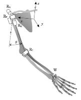
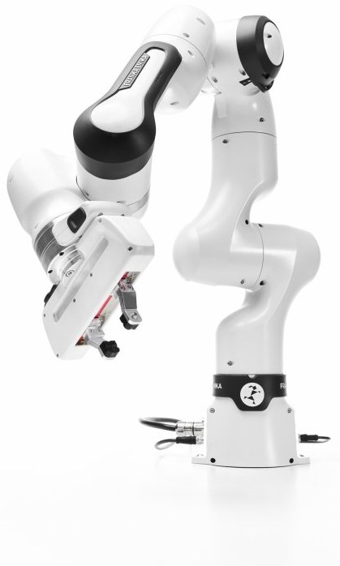
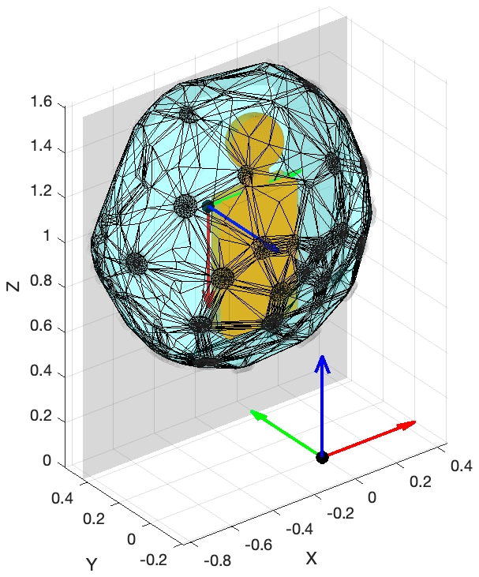
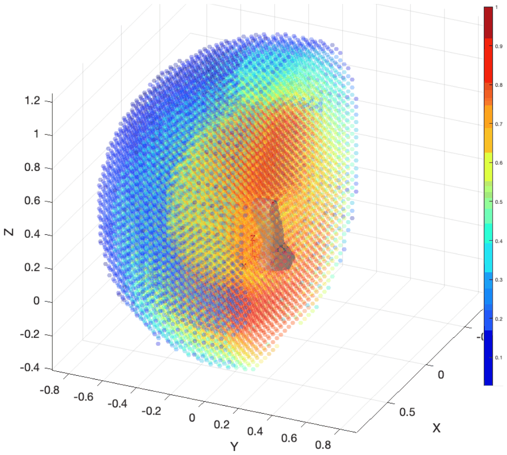
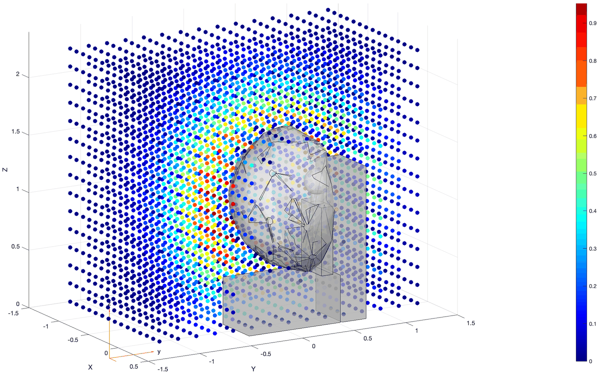
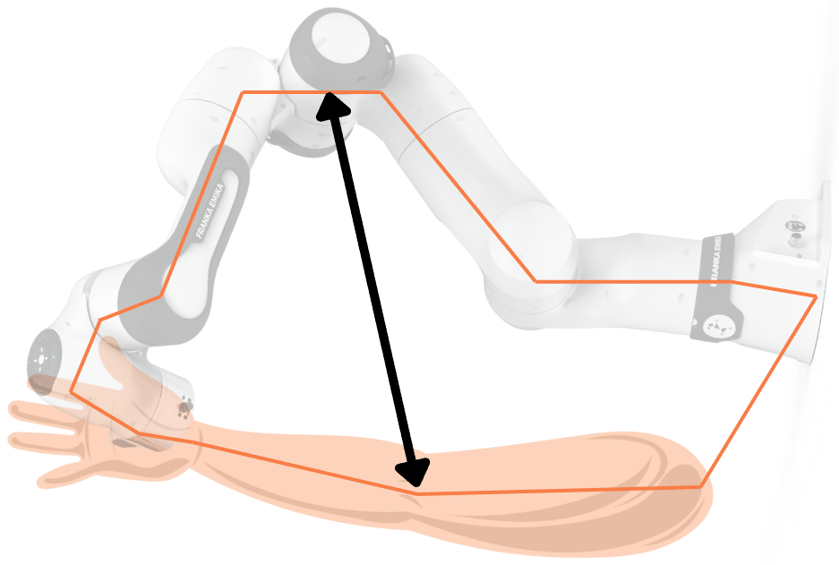
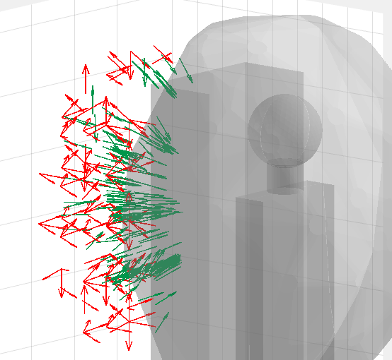
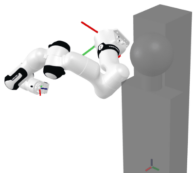

VHIS: Visuo-Haptic Input Station
How does someone with no training in operating a humanoid control it with ease, and feel what the robot feels?
Concept
We are developing the Visuo-Haptic Input Station (VHIS) to control TIAGo Pro through an operator’s arm and hand movements. The intended setup uses two Franka Research 3 (FR3) cobot arms to track motion and provide haptic feedback, combined with a camera view from the remote robot.
The station is designed to map the operator’s movements onto the robot’s workspace and return forces measured during contact. We investigate how this combination can support remote manipulation, including which properties of contact can be conveyed reliably and how the input station should be arranged around the operator.

Two Franka Research 3 (FR3) cobot arms are intended to track the operator’s motion and render haptic feedback
Planned stereo camera feed from the robot’s perspective, displayed in a head-mounted or screen-based viewer
Cobot placement derived from workspace overlap and manipulability, then evaluated using arm and joint closeness; one arm optimised, the second mirrored
Development status
The station is under development. Its spatial configuration has been studied in a publication; teleoperation and haptic feedback are at the internal demonstration stage.
- published Cobot placement. A method for positioning one cobot beside an operator using reach-envelope meshes, workspace overlap and manipulability; the second arm is mirrored (Humanoids 2025).
- shown internally Single-arm teleoperation. A Franka Panda arm has been used to teleoperate one TIAGo arm in internal demonstrations. These demonstrations have not been formally evaluated or published.
- shown once Haptic feedback. Force feedback to the operator has been demonstrated once. Its reliability and its effect on task performance remain to be evaluated.
- planned Integrated dual-arm operation. Coordinated operation of both arms and hands, with haptic feedback and evaluation by users without robotics expertise.
Design Approach
Cobot placement affects the operator’s reachable workspace and the robot’s proximity to its joint limits during movement. Our Humanoids 2025 paper presents a method for selecting that placement through workspace modelling, optimisation and evaluation. One arm is optimised and the second is mirrored.
Model the human and robot arms
We represent the human arm and the Franka Research 3 as seven-joint kinematic chains. The human model uses configuration-dependent joint limits to account for the coupling between joints through muscles and tendons.


Calculate the workspaces
Inverse kinematics without appropriate human joint constraints can produce anatomically implausible postures. We therefore sample the human arm’s allowed joint configurations and calculate the hand positions using forward kinematics. Filtering approximately 312,000 poses for self-collisions and the intended operating region leaves roughly 83,000. Their outer boundary forms a closed mesh for volumetric comparison with the robot workspace.
For the robot, we calculate the average manipulability over 216 orientations at each workspace point. This describes the robot’s capacity for motion at that position, beyond reachability alone.


Optimise and evaluate candidate placements
We screen 729,000 candidate poses by the overlap between the human and robot workspaces. Poses with at least 90 per cent overlap provide starting points for optimisation. The search then maximises manipulability across the operator’s workspace, producing 200 refined placements.
We evaluate these placements using two further measures. Joint closeness captures proximity to joint limits, which can restrict movement during a task. Arm closeness uses the volume spanned between the human and robot arms as a heuristic for the operator’s available space. It does not fully account for collisions. The measures also support comparison with configurations reported by other research groups.




The computation took two weeks on a cluster. Inspection of the five highest-ranked placements excluded three that interfered with the operator’s arm workspace. The remaining two were identified as candidates for testing on the physical station.
This published study evaluates spatial configuration. The integrated teleoperation system remains at the development stages described above.
Research Questions
The VHIS is the central hardware platform for the DFG-funded tele.interaction project (Großgeräteinitiative HAW, project number 533327659, 2024–2028). The research investigates:
- Spatial configuration: How should the input station’s kinematic structure be arranged to maximise the operator’s reachable and dexterous workspace?
- Manipulability transfer: How do the manipulability characteristics of the input device map onto those of the remote robot, and how does this affect task performance?
- Interaction quality: What metrics capture the quality of remote physical interaction (grasping, assembly, palpation), and how can the station be optimised for them?
- Teleimpedance: Can the operator’s arm and hand impedance (stiffness, damping) be measured in real-time and transferred to the robot for compliant, adaptive remote manipulation?
Research background
The VHIS builds on a lineage of teleimpedance and visuo-haptic research. During his time at the German Aerospace Center (DLR, 2009–2018), Prof. Höppner developed methods for measuring human arm and hand stiffness during interaction, and for transferring these impedance profiles to robotic systems, a concept known as teleimpedance.
At BHT, we investigate how teleimpedance can support humanoid manipulation. The VHIS is intended to provide an interface for studying how motion, force feedback and adjustable mechanical impedance affect remote interaction.
Related Publications
- R. Santhanaraman, H. Höppner, “Spatial Configuration of Dual-Arm Visuo-Haptic Input Station: Improving Interaction and Usability,” IEEE-RAS Humanoids, pp. 752–759, 2025.
Collaborators
Develops the input station and the methods for modelling, optimising and evaluating cobot placement around the operator.
Develops a complementary low-cost input device based on the GELLO approach, without force feedback, for practical teleoperation tasks.
Principal investigator.
The VHIS is developed within the DFG tele.interaction project at the Haus der Robotik, BHT Berlin.
Research information reviewed in September 2026.